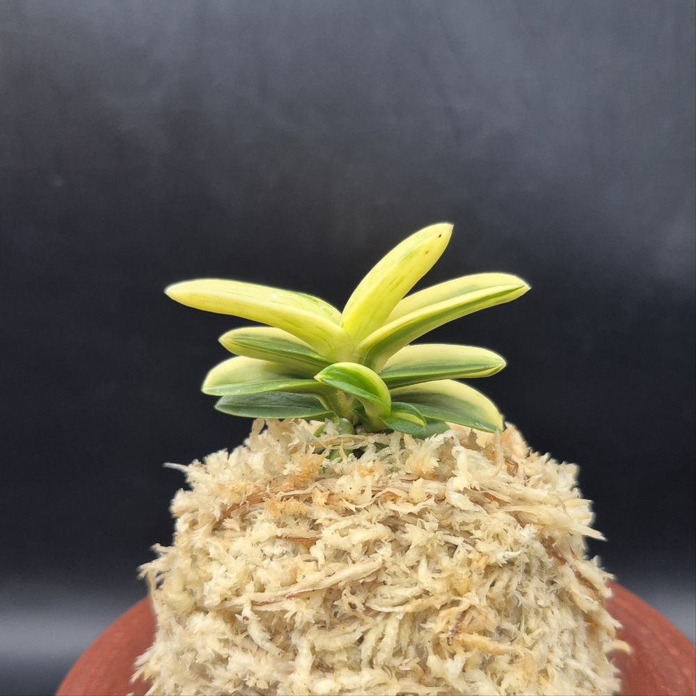
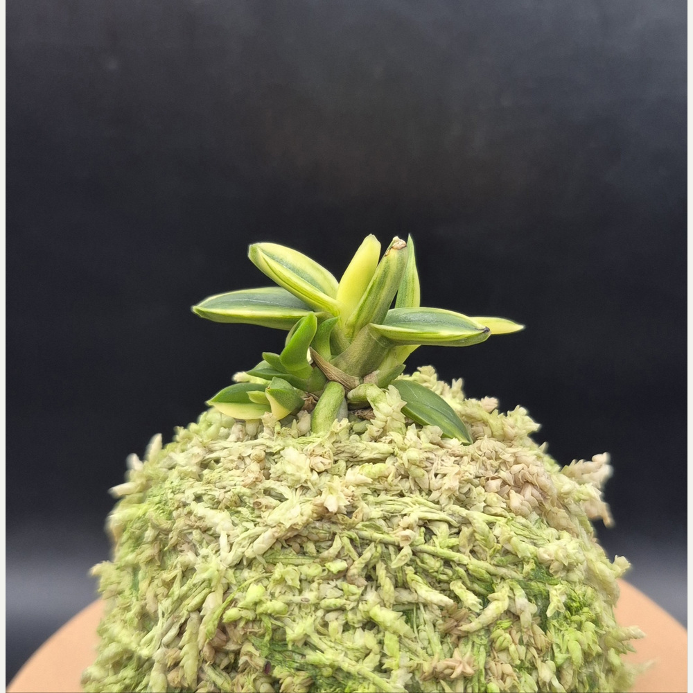
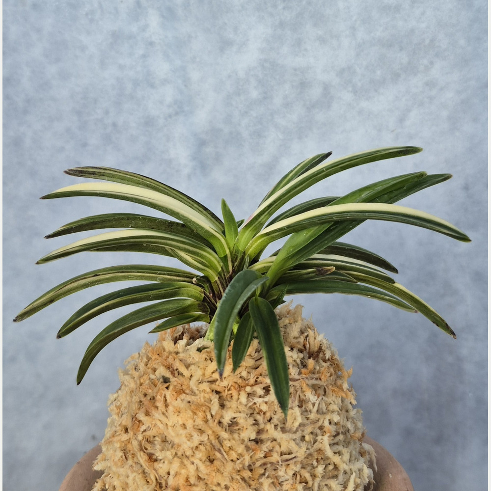
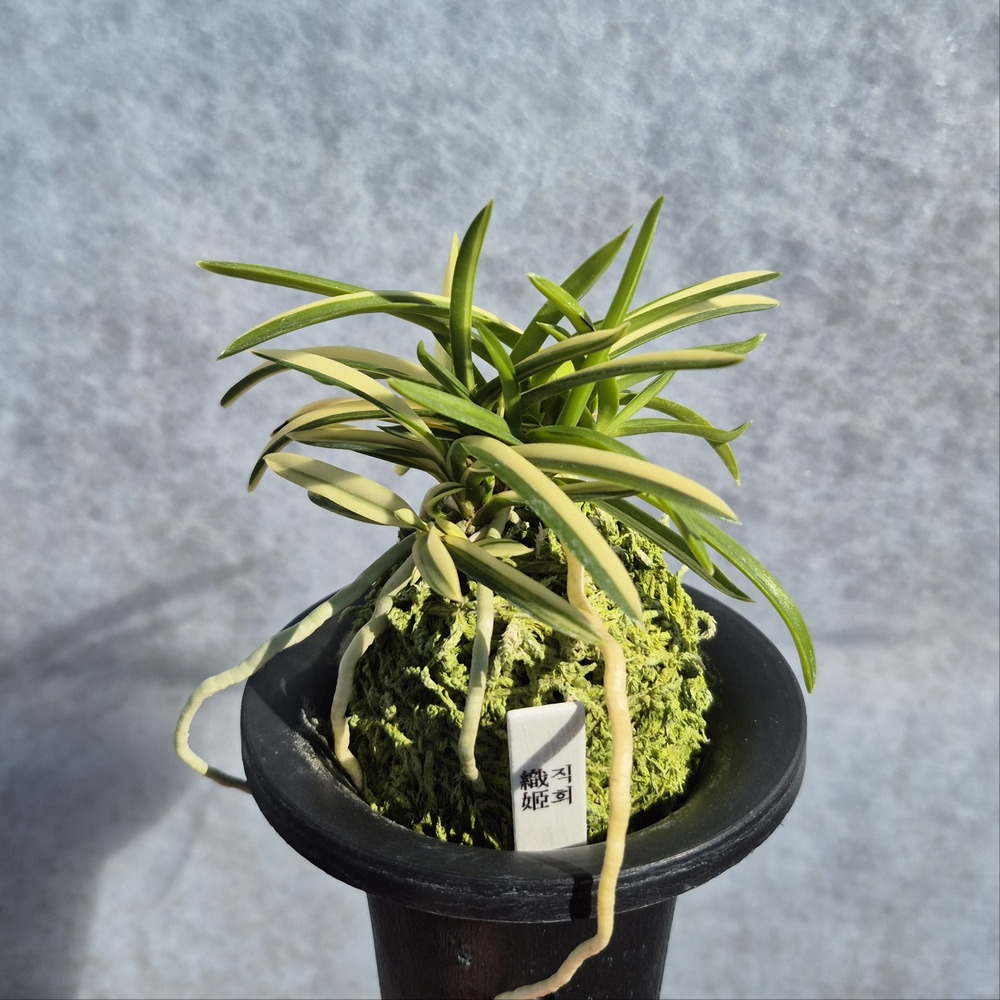
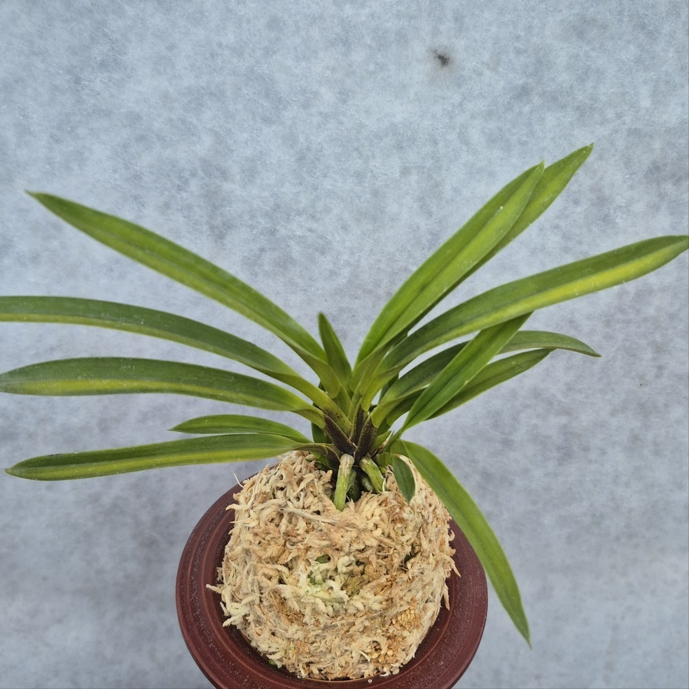

700,000원
호·중반 · 성촉 2촉+신아 1개 · 유백색 호 · CSFART천지연_1026CSFART COLLECTION
호·중반

상품

천지연 1026 · 등록 제120호

무쌍금 1024 · 환엽형 두엽
200,000원
호·중반 · 황색 무늬 · 라사지 · CSFART무쌍금_1024
취월호(翠月湖) 1209 · 산반호 두엽
100,000원
호·중반 · 황색 산반호 · CSFART취월호_1209
대장금(大壯錦) 1023 · 황색 산반호
130,000원
호·중반 · 두엽 · 산반호 · 2촉
백록(白鹿) 1023 · 설백호
150,000원
호·중반 · 설백호 · 성촉 3촉 + 신아 2촉
직희(織姬) 1001
130,000원
호·중반 · 희엽 · 산반호 · CSFART직희_1001
백결 단엽(白潔)
130,000원
분류 확인 필요 · CSFART 상품 도감
금두(金兜) 6121 · 황호 풍란
60,000원
호·중반 · 반직선형 중형 · 황색 줄무늬
보금(寶錦) 3811 · 백황호 풍란
80,000원
호·중반 · 백황호 · 희엽
금광금(金廣錦) 1521 · 황호
150,000원
넓은 잎과 황색 줄무늬 · CSFART금광금_1521금직 4501
450,000원
호·중반 · 황색과 녹색 잎무늬 · CSFART4501
음풍(吟風) 0001 · 묵·황호
75,000원
아마미계 · 묵(墨)과 황호(黃縞) · CSFART음풍_0001